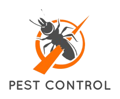

We are aware that there may be concern about the dangers of using pesticides, and it’s harm that it can do to the environment. However, It can be assured that our methods of pest extermination won’t harm the environment in any manor. The pesticides that we use can be found naturally throughout the environment like Diatomaceous Earth ( Tiny fossilised remains of aquatic organisms ) they can be found in hardware and gardening centers often used on roof cavities or under floorboards, Boric acid ( A boron compound that effects the stomach and nerves of insects ) this can be found _________ , Pyrethrin, Mentha x piperita etc. These Pesticides can be used to exterminate pests and deter rodents from entering your home, all without endangering the environment at all.